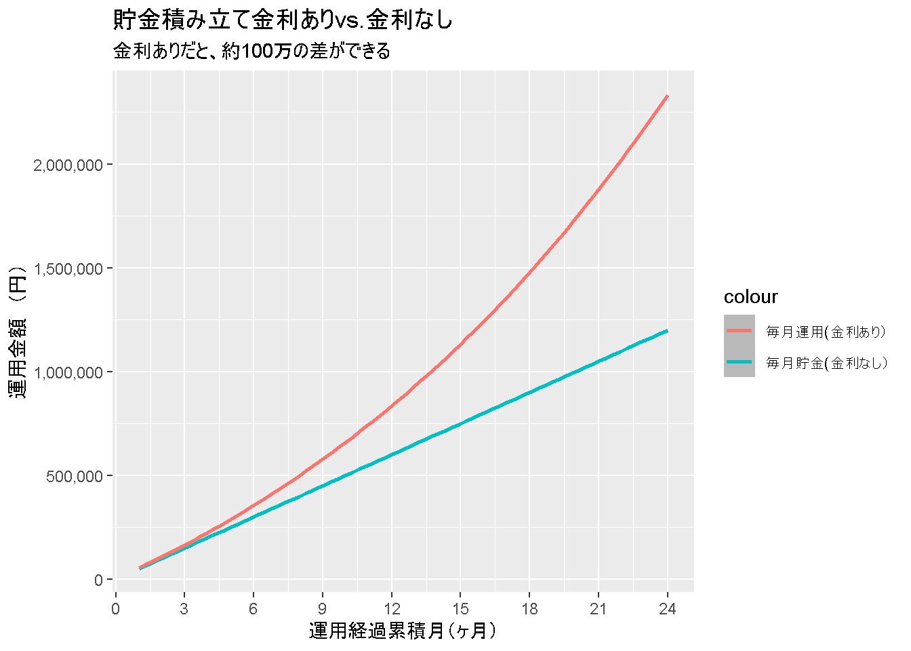

資産運用計画をRで計算してみようと思ったけど…
Page content
こんにちは！
最初に言っておきますが、今日は、資産運用計画をRで計算しようとしましたが、上手く出ませんでした。
その理由は、いくつかありますが、特に * 金融系の知識が足りない。 * R言語を意のままに操れていない。
というのが挙げられます。
なので、今日は完全に分析半ばで記事が終わります！
それでもいいという優しい方、読んでいただければ僕の励みになります！
では、見ていきましょう！
やろうとしている（していた）こと
複雑な資本の運用計算をRで簡単にすませたい！！
今回、エクセルではなく、R言語でやりたいと思った理由は、いくつかのケースを並行して考えたかったからです。 例えば、利子率って、投資する資産によって変わるし、加えて、時間軸を書ければ、その変動幅も変わります。 そのようないくつかの変数の組み合わせを数十年というスパンで分析したい！と思うと、エクセルだとなかなか厳しいんですよね。 なので、Rを使ってやってみました。
環境
version## _
## platform x86_64-w64-mingw32
## arch x86_64
## os mingw32
## system x86_64, mingw32
## status
## major 4
## minor 0.3
## year 2020
## month 10
## day 10
## svn rev 79318
## language R
## version.string R version 4.0.3 (2020-10-10)
## nickname Bunny-Wunnies Freak Outパッケージの準備
Packages <- c("tidyverse", "ggplot2", "DT", "scales")
lapply(Packages, library, character.only = TRUE)## -- Attaching packages --------------------------------------- tidyverse 1.3.0 --## √ ggplot2 3.3.3 √ purrr 0.3.4
## √ tibble 3.0.4 √ dplyr 1.0.2
## √ tidyr 1.1.2 √ stringr 1.4.0
## √ readr 1.4.0 √ forcats 0.5.0## -- Conflicts ------------------------------------------ tidyverse_conflicts() --
## x dplyr::filter() masks stats::filter()
## x dplyr::lag() masks stats::lag()##
## 次のパッケージを付け加えます: 'scales'## 以下のオブジェクトは 'package:purrr' からマスクされています:
##
## discard## 以下のオブジェクトは 'package:readr' からマスクされています:
##
## col_factor前提条件
- interest rateは、期末に支払われる。
- 途中で貯蓄を引き出すことはできない。
- 金利と毎月の貯金額は一定。
- 金利は複利で、年利５％で、毎月組み込まれる式。
- 毎月の貯金額は、5万円。
- 運用期間は、2年間（24か月）
まず、最初は単純化した条件で計算してみます。
変数の準備
m <- 1:24 # 1か月目から、24か月目の期末まで
ms <- rep(5, length(m)) # 毎月5万円の積み立て
r <- rep(0.05, length(m)) # 5%の利子率（固定）
ms_r <- ms * (1 + r) # 毎月の積立金額 * 利子率
cum_ms <- cumsum(ms) # 金利なしver.の貯金額を知りたい
cum_ms_r_moment <- (5 * (1.05) - (5 * 1.05 ^ (1:24 + 1))) / (1 - 1.05) # その時の運用額累計を表示したい
percent <- cum_ms_r_moment / cum_ms # 金利ありｖｓ金利なしを比較したい
n <- 24:1 # 貯金開始１か月目の貯金額に対しては24回金利のcompoundがある
r2 <- (1 + r / 12) ^ sort(length(n):1, decreasing = TRUE) # 2年後の視点から見て、毎月の金利が結果いくらになるのか知りたい
ms_r2 <- ms * r2 # 毎月の積立金額 * 利子率
cum_ms_r2_future <- cumsum(ms_r2) # 24か月目の項目以外は無視データフレーム化
plan <- data.frame(m, ms, r, ms_r, cum_ms, cum_ms_r_moment, percent,
n, r2, ms_r2, cum_ms_r2_future)
datatable(plan)ggplot(plan, aes(x = m)) +
geom_smooth(aes(y = cum_ms, color= "毎月貯金(金利なし）")) +
geom_smooth(aes(y = cum_ms_r_moment, color = "毎月運用(金利あり）")) +
scale_y_continuous(labels = comma) +
scale_x_continuous(breaks = seq(0, 24, by = 3)) +
xlab("運用経過累積月（ヶ月）") +
ylab("運用金額 （万円）")## `geom_smooth()` using method = 'loess' and formula 'y ~ x'
## `geom_smooth()` using method = 'loess' and formula 'y ~ x'
#最後に、、、
とりあえず、関数と図をプロットできる形にはできたのですが、リスク資産のボラティリティや、グラフィックツールとしてのggplot2の知識が足りないと思うので、いったんここで、将来の運用戦略を練るのは、お休みしようと思います。
- 次回やりたいとおもっていること。
- さらに洗練されたggpolo2のグラフを書く。
- デバッグの仕方に慣れる。
- 資産運用の際のボラティリティの肌感を身に着ける。
- さらに、複数の資産と組み合わせて、ポートフォリオを作り、リスクを分散させたモデルを使った場合の運用ケースを比べる。
学んだこと
自作関数での分析は初めてに近かったため、学ぶことが多かったので簡単にまとめておきます。
- デバッグの重要性。
- ggplot2で重ねるグラフを書くこと。そして、色をうまくつけること。
今日もありがとうございました！
Adios!!
Packages <- c("tidyverse", "ggplot2")
lapply(Packages, library, character.only = TRUE)
## 前提条件
### interest rateは、期末に支払われる。
### 途中で引き出すことはできない。
### 金利と毎月の貯金額は一定。
### 金利は複利で、年利５％で、毎月組み込まれる式。
### 毎月の貯金額は、5万円。
### 運用期間は、2年間（24か月）
## 変数を準備
###sheet1 at_the_moment_value
### m:経過した月、ms:毎月の貯金額、r:金利、ms_r:各貯金の1か月経過後の運用額、cum_ms:毎月貯金額累計（金利なし）
### cum_ms_r_moment:毎月の運用額の累計、percent:毎月の累計運用額 / 毎月貯金累計（金利なし）
### n:金利が2年後までにcompoundされる回数（例：1か月目はn = 24)、cum_ms_r_future:2年経過後の各貯金額の累計
m <- 1:24 # 1か月目から、24か月目の期末まで
ms <- rep(5, length(m))
r <- rep(0.05, length(m))
ms_r <- ms * (1 + r)
cum_ms <- cumsum(ms) # 金利なしver.の貯金額を知りたい
cum_ms_r_moment <- (5 * (1.05) - (5 * 1.05 ^ (1:24 + 1))) / (1 - 1.05) # その時の運用額累計を表示したい
percent <- cum_ms_r_moment / cum_ms # 金利ありｖｓ金利なしを比較したい
n <- 24:1 # 貯金開始１か月目の貯金額に対しては24回金利のcompoundがある
r2 <- (1 + r / 12) ^ sort(length(n):1, decreasing = TRUE) # 2年後の視点から見て、毎月の金利が結果いくらになるのか知りたい
ms_r2 <- ms * r2
cum_ms_r2_future <- cumsum(ms_r2) # 24か月目の項目以外は無視
## データフレーム化
plan <- data.frame(m, ms, r, ms_r, cum_ms, cum_ms_r_moment, percent,
n, r2, ms_r2, cum_ms_r2_future)
head(plan)
library(ggplot2)
## グラフ表示
ggplot(plan, aes(x = m)) +
geom_smooth(aes(y = cum_ms)) +
geom_smooth(aes(y = cum_ms_r_moment))
## データフレームを自動で作れる関数を作る
saving_plan <- function(Month, Save, R) {
m <- 1:Month # 一か月目から、24か月目の期末まで
ms <- rep(Save, length(m))
r <- rep(R, length(m))
ms_r <- ms * (1 + r)
cum_ms <- cumsum(ms) # 金利なしver.の貯金額を知りたい
cum_ms_r_moment <- (Save * (1 + R) - (Save * (1 + R) ^ (m + 1))) / (1 - (1 + R)) # その時の運用額累計を表示したい
percent <- cum_ms_r_moment / cum_ms # 金利ありｖｓ金利なしを比較したい
n <- Month:1 # 貯金開始１か月目の貯金額に対しては24回金利のcompoundがある
r2 <- (1 + r / 12) ^ seq(length(n):1) # 2年後の視点から見て、毎月の金利が結果いくらになるのか知りたい
cum_ms_r_future <- cumsum(ms_r2) # 24か月目の項目以外は無視
plan <- data.frame(m, ms, r, ms_r, cum_ms, cum_ms_r_moment, percent,
n, r2, cum_ms_r_future)
}
df <- saving_plan(24, 5, 0.05)
df
## 複数のプランを比べる
### 複数のプランをつくる。
A <- saving_plan(24, 5, 0.05)
B <- saving_plan(24, 5, 0.075)
C <- saving_plan(24, 5, 0.1)
### 複数のプランを作る際に必要な項目に絞る
plans <- data.frame(A[1],A[6],B[6], C[6]) %>% as_tibble()
plans2 <- plans %>%
select(
Month = m,
caseA = cum_ms_r_moment,
caseB = cum_ms_r_moment.1,
caseC = cum_ms_r_moment.2
)
plans2
### グラフ化する
ggplot(plans2, aes(x = Month)) +
geom_smooth(aes(y = caseA)) +
geom_smooth(aes(y = caseB)) +
geom_smooth(aes(y = caseC))
# モデルを複雑化する そろそろエクセルじゃ限界か？
## 前提条件
### interest rateは、期末に支払われる。
### 途中で貯蓄を引き出すことはできない。
### 金利と毎月の貯金額は一定。
# →月々の貯金を時間と共に増加させる
# →金利は金利を固定ではなく、金利をr%を平均値とする正規分布に近似する複利に変える。
#つまり、リスク資産で運用する場合を想定する。
### 毎月の貯金額は、5万円。
### 運用期間は、2年間（24か月）
## 関数を作る
saving_plan2 <- function(Month, Save_first, Increase_by, R, SD) {
m <- 1:Month # 一か月目から、mか月目の期末まで
ms <- seq(Save_first, by = Increase_by, length.out = Month)
r <- rnorm(n = Month, mean = R, sd = SD)
ms_r <- ms * (1 + r)
cum_ms <- cumsum(ms) # 金利なしver.の貯金額を知りたい
cum_ms_r_moment <- (ms * (1 + R) - (ms * (1 + R) ^ (m + 1))) / (1 - (1 + R)) # その時の運用額累計を表示したい
percent <- cum_ms_r_moment / cum_ms # 金利ありｖｓ金利なしを比較したい
n <- Month:1 # 貯金開始１か月目の貯金額に対しては24回金利のcompoundがある
r2 <- (1 + r / 12) ^ seq(length(n):1) # mヶ月後の視点から見て、毎月の金利が結果いくらになるのか知りたい
cum_ms_r_future <- cumsum(ms_r2) # mか月目の項目以外は無視
plan <- data.frame(m, ms, r, ms_r, cum_ms, cum_ms_r_moment, percent,
n, r2, cum_ms_r_future)
}
plan3 <- saving_plan2(24, 50000, 1000, 0.05, 1)
###確認する
head(df)
library(scales)
ggplot(plan3, aes(x = m)) +
geom_smooth(aes(y = cum_ms_r_moment, colour = "積み立て（金利あり）")) +
geom_smooth(aes(y = cum_ms, colour = "積み立て（金利なし）")) +
scale_y_continuous(labels = comma) +
xlab("ヶ月") +
ylab("円")